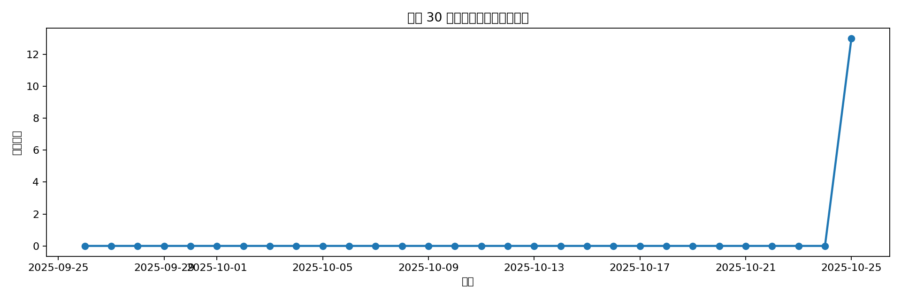

🎵 Your Music Statistics
数据来源：amll-music-monitor 生成时间：2025-10-26 10:07
📊 总体概览（真实累计）
- 累计播放 13 次
- 有效收听天数 1 天
- 估算累计收听 0.9 小时
- 记录时间跨度 2025-10-25 至 2025-10-25
🎤 最爱歌手 TOP10（真实累计）
- 犬儒乐队 (7 次)
- 痛仰乐队 (6 次)
🎶 最爱歌曲 TOP10（真实累计）
- 犬儒乐队 - 烂苹果 (7 次)
- 痛仰乐队 - 幌子 (6 次)
📈 最近 30 天播放趋势

🕑 24 小时播放分布